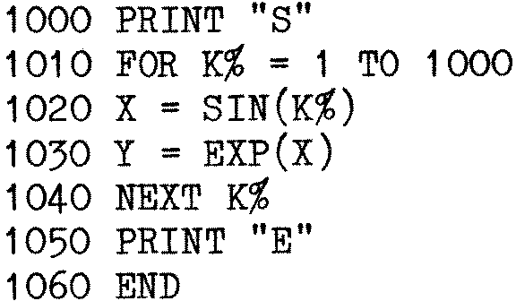

80-Bus News |
November–December 1983 · Volume 2 · Issue 6 |
| Page 19 of 67 |
|---|
not use quite such big integers, so it seems to be producing less efficient code for this benchmark. It is not easy to be sure about this, however, on account of the stopwatch and its operator… All the routines using just integers suffer from the same “negative improvement”, but look what happens with Realarithmetic! HP5 cuts the time down quite well, while Compas is nowhere near even HP4. And when it comes to the (number) crunch, in Program Maths, HP5 is probably about 20% faster than HP4, even though it is doing a lot more work in the loop counting part of the program. The “*” mark indicates that I didn’t believe the timing I got for Program Value, using Compas. Either the compiler is very efficient at calling procedures when there are no parameters, or this is a result of the fact that Compas procedures are not recursive unless you tell it they should be. (In other words, it does not normally set up a new local workspace every time a procedure begins, which proper Pascal compilers have to do.) Or perhaps I compiled it wrong…
Since writing that paragraph, I have read Polydata’s remarks in the last issue, and appreciate that much of what I have just said about their compiler may well be hopelessly wrong, when applied to version 2. It would be nice if they could let us know how fast the new version runs the benchmarks. I was pleased to see that they are now taking a much more sensible line over royalties on your programs, too…
Anyway, the bottom line of the table is the one you are buying, and the HSA-88B is clearly pulling its weight there. By comparison, the Sage II, with its 68000 processor, using the well known p-system, and costing rather a lot more than my system, takes 7.6 seconds to run Program Maths. And if you run this:

using MBASIC, you will find it takes about 25 seconds, running at 4MHz, even though it is using K%, which is faster than plain K. I have also written some other test programs which lean more heavily on the maths processor than the benchmarks do, because they don’t really probe very deeply into the realms of number crunching, and there is an even more noticeable improvement, but space does not permit the inclusion of these programs. They don’t actually do anything useful, anyway, unless anyone wants a list of all the prime numbers lower than MAXINT…
If you want the answers to your sums faster, or just want to be the envy of all the people with slow computers, then the HSA-88B has to be a good buy. As soon as I have taken my Open University exam for this year, and have some time to myself and Marvin, I am hoping to write some fancy stuff, using Pluto, HSA-88B (pity they couldn’t have given it a nice name – what does the 88B bit refer to?) and HP5. Real 3D programs need fast matrix calculating routines to make them work. See in particular the article in December PCW for an idea of what can be done. Perhaps I need an array of HSA-88B’s, say four of them, running in parallel…
| Page 19 of 67 |
|---|